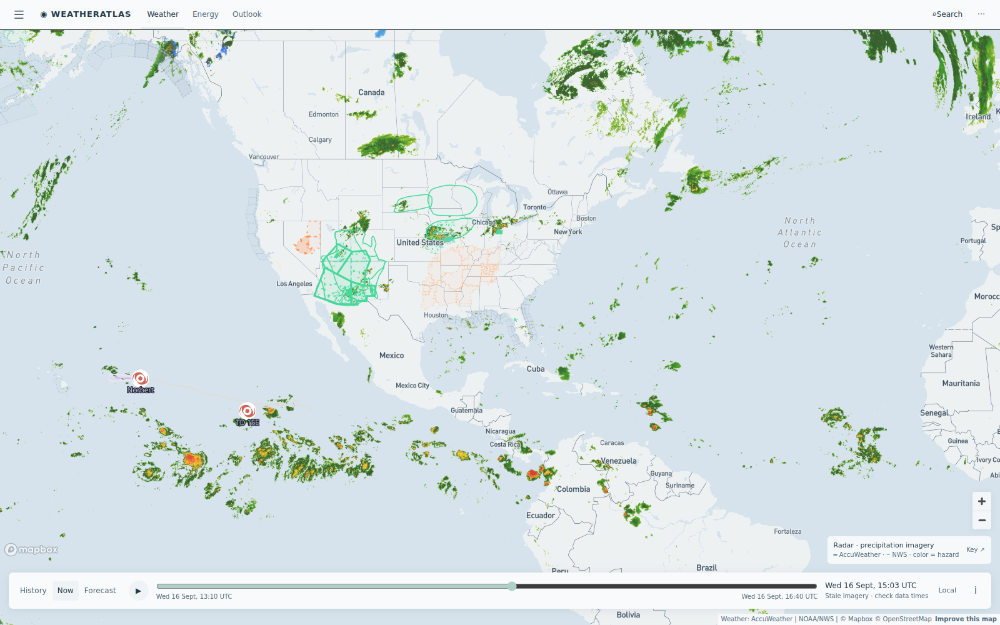

Daily severe-weather intelligence for LNG, refining, offshore, and terminal operators.

Live radar + alerts, 16 Sept 14:30 UTC. TD Norbert and TD 15-E remain over open eastern Pacific water (no mainland energy impact); the outlined rain corridors across the central US — Colorado Plateau gas fields, Texas/Oklahoma, and the Midwest — carry today's flood-watch footprint for refining, fertilizer, and gas assets. Interactive radar + hurricane tracker: accuweather.taborlin.co.
| System | Status | Energy-asset impact |
|---|---|---|
| Atlantic / Gulf / Caribbean | QUIET | Cyclone-free a 6th day; NHC's only interest area is a weak central-Atlantic disturbance (<40% / 7 days) well east of Bermuda — no Gulf or Caribbean development signal this week |
| TD Norbert (E Pacific) | WEAKENING | 29-mph tropical depression over open water — no threat to ECA LNG, Pacific tanker lanes, or Mexico Pacific coast assets |
| TD Fifteen-E (E Pacific) | OPEN WATER | Tracking away from mainland Mexico — Mexican Pacific refining out of the path; ECA watch only |
| Central-US rain regime | ACTIVE | Flash-flood flags + NWS flood watches across the Colorado Plateau gas fields (Doe Canyon, Ignacio Blanco, Mamm Creek corridors) and the Midwest fertilizer belt — well-site access, rail spurs, and truck moves face washout risk; Piceance/San Juan gas ops should plan pad access around the heaviest cells |
| Borneo NW monsoon shoulder | ACTIVE | Midnight thunderstorm window + 9 AM convective burst at the Bintulu LNG complex tonight (local) — overnight jetty lightning-stand-down risk bracketing the one dry 01:00–08:00 loading window |
| Australian cyclone pre-season | 10 WEEKS | Season opens Nov 1; east-coast LNG berths (Gladstone corridor) currently in a clean dry window — the pre-season runway is when forecast stacks get proven before the first named system |
Same hours, same coordinates (MLNG Bintulu complex, 3.17°N 113.04°E, tonight through tomorrow morning local time), two very different planning answers:
Midnight t-storm window (52%) + 9 AM burst (63%) vs a flat 94% on free data — the dry 01:00–08:00 loading window is only visible on enterprise hourly.
Live brief →Clean overnight berthing window (0–1%) with showers arriving 10 AM — free data reads 38% overnight rain, a phantom marine delay; cyclone season opens in 10 weeks.
Live brief →AccuWeather flash-flood flags live across Piceance/San Juan gas fields tonight while NWS county watches lag hours behind — pad access and crew moves are the exposure.
Atlas live board →Asset-pinned AccuWeather + NWS alert board with lightning feed — the same data powering these briefs.
accuweather.taborlin.co →